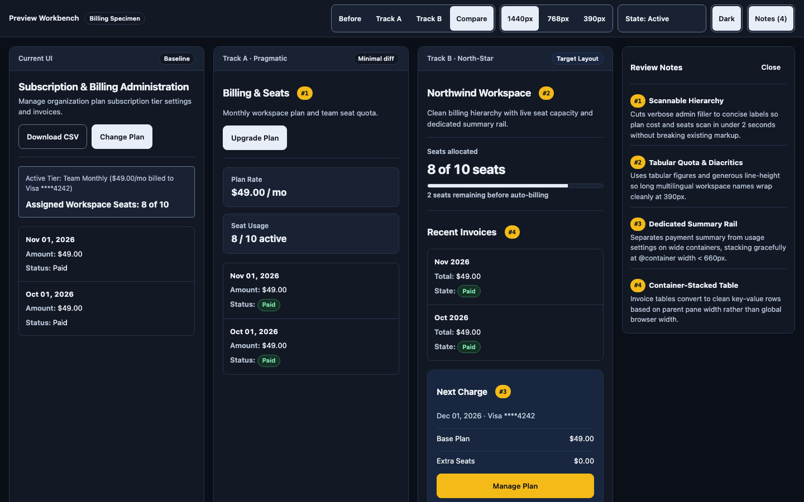

STEP 01
Scan your repo or URL
Auto-detects your stack, checks DTCG tokens, CSS focus rings, dark-mode contrast, and maps every defect to real user personas.
ZERO-DEPENDENCY CLI · AGENT SKILL · CI GATE
Run one command to check keyboard focus, light/dark contrast, mobile layouts, and design token drift — directly in your terminal, inside Claude/Cursor/Codex/Antigravity, or in GitHub CI.
Works whether your app uses a full design system library or plain CSS and Tailwind.
STEP 01
Auto-detects your stack, checks DTCG tokens, CSS focus rings, dark-mode contrast, and maps every defect to real user personas.
STEP 02
Inspect clean Before vs. Pragmatic vs. North-Star drafts in an offline preview shell, or fix safe CSS issues with dsaf fix.
STEP 03
Block accessibility regressions in GitHub CI with SARIF reports, or enable bounded auto-evolution rules with a instant stop switch.
Copy the exact command or workflow snippet for local checks, AI agents, or CI.
Shows Floor blockers, Reflex warnings, token compliance %, and impacted user personas — or renders a shareable offline HTML file.
npx @zintaen/dsaf check .
npx @zintaen/dsaf audit . --html audit-report.html --out ./audit-output
npx @zintaen/dsaf runtime https://your-site.example.com --live --axedsaf setup copies the portable audit skill and registers the 9-tool read-only MCP server without overwriting your existing config.
# Claude, Cursor, Codex, Antigravity, or all at once
npx @zintaen/dsaf setup --agent all --scope user
# Or install only the MCP server entry into the current project
npx @zintaen/dsaf mcp install --agent cursor --scope projectUploads SARIF 2.1.0 alerts to GitHub Code Scanning and posts a sticky persona-impact summary comment on every pull request.
- uses: actions/checkout@v7
- uses: zintaen/dsaf@v0.9.2
with:
target: .
fail-on-floor: "true"
upload-sarif: "true"
comment-pr: "true"Preview safe CSS fixes with dsaf fix --dry-run, or bootstrap `.dsaf/` rules aligned with auto-evolve-strategy v1.2.0 (atomic leases + instant STOP file kill switch).
npx @zintaen/dsaf fix src --dry-run
npx @zintaen/dsaf fix src --apply --backup
npx @zintaen/dsaf init . --with-hook --with-workflow
npx @zintaen/dsaf evolve . --verifyExplore the before/after UI workbench and an editorial HTML audit report — built cleanly with native container queries and zero external frameworks.


Verified highlights across recent DSAF milestones.
| Version | Highlights | Status |
|---|---|---|
| v0.9.2 | Added 1-command onboarding (dsaf check, dsaf setup, dsaf mcp install); linked findings directly to user personas; added standalone HTML reports (--html); added live tab/disclosure/theme runtime checks; redesigned Preview Shell and docs homepage cleanly without filler boxes; adopted auto-evolve-strategy v1.2.0. |
Zero-Dep + Verified |
| v0.9.1 | Uncapped signal-driven personas + .dsaf/personas.custom.json merge; container-query Preview Shell responsiveness and simulated tablet/mobile checks. |
Container + Playwright |
| v0.9.0 | Added dsaf personas, 9th MCP tool, CSS Nesting (&) + Base UI rules, monorepo DTCG discovery, and mobile header/pill/table runtime probes. |
Playwright + OIDC |